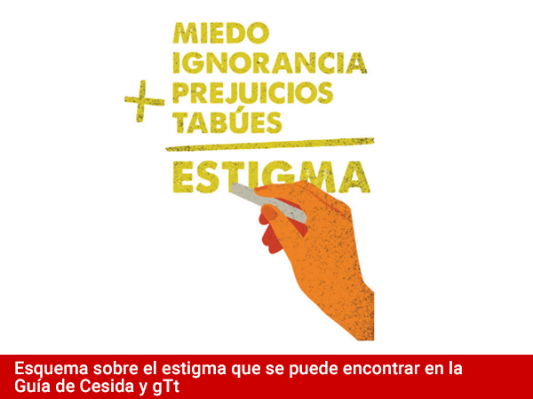
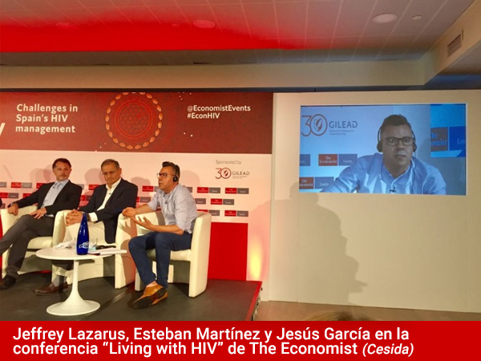

{kind=link}
eldiario.es (21/07/2017)
Este medio utiliza hasta en 7 ocasiones el erróneo "contagio", en vez del correcto "transmisión". Leer el artículo original
Alfredo Pazmiño es sociólogo, canario, gay, de origen peruano y vive con el Virus de la Inmunodeficiencia Humana desde 2011. Ha sido parte de Fundación Triángulo desde 2007, trabajando por la lucha de los derechos del colectivo LGBT en todo el mundo y en programas de prevención de VIH. Su visión sobre la infección resulta, en un primer momento, impactante. Como él mismo explica, siempre supo que iba a adquirir VIH. Estaba preparado para vivir con ello antes de tenerlo. Tuvo un tío que murió a causa de una de las enfermedades oportunistas del sida y tiene otro tío que vive con VIH actualmente. A través de una videollamada, revela que su acercamiento al virus se ha basado siempre en la información y en la toma de decisiones desde un punto de vista realista.
Su historia se entiende desde la complejidad y la profundidad de la vida misma. Antes de adquirir el VIH, Alfredo decidió bajar la guardia y no usar preservativos en sus relaciones sexuales. “En una sociedad hipersexualizada, el hombre gay busca jugar con el riesgo para ser sexualmente más atractivo. Caí en eso para sentirme con control y capacidad de ser un objeto de deseo, pero asumí todos los riesgos y me hice responsable de las consecuencias”. Entonces, con 29 años, sabía que tenía muchas posibilidades de tener el VIH. “Cuando me dieron el diagnóstico no dudé ni tres segundos. Ni me enfadé, ni lloré. No significó nada más allá. Incluso intentaba tener una fase de duelo, pero no la encontraba. Ni tampoco una razón por la que sentirme culpable. Era muy consciente de lo que me pasaba”.
Relata que se enteró de su diagnóstico después de una reunión sobre cooperación internacional en la Oficina de Derechos Humanos del Ministerio de Exteriores. Recibió una llamada de su médica de cabecera y amiga. Le contó que tenía VIH y que tenía que volver a Tenerife para realizarse algunas pruebas. “Y yo reaccioné diciendo: tengo un vuelo para Ámsterdam y luego viajo a Dinamarca. Cuando vuelva, me haré las pruebas porque no voy a cambiar mi vida por un diagnóstico. Ella no comprendió ese procesamiento mío, pero yo ya estaba concienciado”.
Admite que es una reacción fría y poco emocional, pero recalca que es el resultado de plantearse la vida de otra manera. Imagina que su visión de enfrentarse a los problemas sanitarios le supera a mucha gente debido a que el mal estado de salud duele mucho y “te pone en una tesitura compleja porque no puedes controlar tu salud ni con dinero, ni con prevención, ni con atención”. Aun así, confiesa que no puede evitar adolecer de la demonización social que poseen las personas seropositivas. “Una de las realidades más complejas de superar fue recibir miradas acusadoras por parte de la Administración. Me hicieron sentir peor que el diagnóstico en sí mismo por ser otro agente sanitario”.
Alfredo forma parte de las 141.000 personas que viven con VIH en España. De esta cifra, el Centro Europeo para la Prevención y Control de Enfermedades (ECDC) estima que el 18% desconoce su estado serológico. Madrid es una de las regiones más afectadas, con casi un tercio de personas seropositivas sin diagnosticar. Los últimos datos registrados en España indican que en 2015 hubo 3.400 nuevos diagnósticos de VIH. Los números disminuyen con respecto a los siete años anteriores, pero se percibe un estancamiento que Jorge Álamo, voluntario de salud en Fundación Triángulo Madrid, ve como un “fracaso” por el que “no hay que congratularse”.
Que no bajen las cifras es frustrante, pero que no aumenten tiene su parte buena
Sin datos de la situación en 2016 (para ello tendremos que esperar a noviembre de este año), Juanse Hernández, miembro del Grupo de Trabajo sobre Tratamientos de VIH (gTt), se muestra más prudente: “que no bajen las cifras es frustrante, pero que no aumenten tiene su parte buena porque el tratamiento antirretroviral está ejerciendo como muro de contención para que no haya más casos”. Carmen Rodríguez y Jorge del Romero, jefa de laboratorio y director, respectivamente, del Centro Sanitario Sandoval, son más optimistas. Ambos destacan que las cifras de nuevos diagnósticos de Sandoval han disminuido por primera vez. “En la última década, los nuevos casos de VIH en Estados Unidos han descendido en un 19%. España va a llegar a estas cifras”, insiste del Romero.
La epidemiología del VIH (ciencia de la medicina que estudia su desarrollo e incidencia en la población) establece categorías en función de la vía de transmisión por la que se ha adquirido el virus. Después de meses recabando información, uno se habitúa a escuchar terminología muy precisa: hombres que tienen sexo con hombres (en adelante HSH), heterosexuales, personas que se inyectan drogas (en adelante, PID) o personas de las que se desconoce el origen de su transmisión y que representan casi un 20% del total de nuevos diagnósticos.
En España hay algunos aspectos que hemos desarrollado de manera sobresaliente con respecto a las recomendaciones de ONUSIDA, el Programa Conjunto de las Naciones Unidas sobre el VIH/Sida. Según recoge la Unidad de Inteligencia del periódico The Economist, en nuestro país la gran mayoría de personas con VIH están recibiendo medicación y, además, tienen carga viral indetectable. No obstante, y aunque podamos parar un momento a felicitarnos por lo conseguido, existen retos muy importantes que están siendo trabajados por los distintos agentes implicados en la lucha contra el VIH. Los desafíos más destacados se encuentran en las características de los nuevos diagnósticos y en la transformación que ha sufrido el perfil de persona que vive con VIH. En las décadas de 1980 y 1990, la persona seropositiva procedía habitualmente de un entorno de exclusión social y drogadicción que, generalmente, acababa desarrollando sida. Actualmente, se habla de una infección de transmisión sexual y, por primera vez, casi la mitad de las personas que viven con VIH en España tiene más de 50 años.
Prevención
Me dirijo al Centro de Salud de Justicia, en el barrio de Chueca. Allí he quedado con Guillermo López, miembro de Apoyo Positivo y experto en salud sexual. Me van a realizar una prueba rápida de VIH y sífilis. Solo necesitan un pinchazo en la yema de mi dedo y una gota de sangre. Estaba acostumbrado a la prueba con saliva de otras ONG, pero el estar en un entorno clínico facilita disponer de este test de última generación que cuenta con un período ventana mucho menor que las pruebas disponibles en las asociaciones.
El resto de la sesión con López deriva en una hora de conversación sobre la prevención y otros aspectos del VIH, que comúnmente se conoce como counseling (en español, consejo asistido). La semana anterior, en mi visita a Fundación Triángulo, Gerjo Pérez, técnico especializado, me confirmó que “es mucho más útil estar 45 minutos sentado con un usuario hablando abiertamente de salud sexual, que cualquier folleto o preservativo que podamos repartir”. En caso de un resultado negativo de VIH, el objetivo de esta estrategia es informar, resolver dudas y que la toma de decisiones en cuanto a salud sexual sea más responsable. Pero la prueba rápida también es útil para que más personas conozcan su estado serológico, lograr un diagnóstico precoz que frene la cadena de transmisión del virus a otras personas e impedir el temido diagnóstico tardío.
En España, los diagnósticos tardíos son casi la mitad de los nuevos diagnósticos (el 46,5%). Son situaciones en las que la persona puede alcanzar la fase sida y desarrollar alguna enfermedad oportunista, debido a que las defensas del organismo están muy bajas. Cándida Álvarez, de AGAVIH, hace hincapié en la gravedad sanitaria de este escenario, puesto que se “puede llegar a estar dos meses en la UCI o en coma inducido”. Además, gTt explica que las personas con diagnóstico tardío presentan un riesgo de fallecer 10 veces superior al del resto de personas con resultado positivo reciente. Aunque este hecho es mayoritario en HSH, empeora dentro de hombres heterosexuales, mujeres heterosexuales e inmigrantes.
No obstante, Guillermo confiesa que la prueba tiene sus límites. “Para venir y pedir una prueba, tienes que tener una percepción de amenaza. El problema es que hemos desarrollado narrativas que hacen que nos alejemos de centros de salud, aun habiendo tenido prácticas de riesgo. Pensamos que a nosotros no nos va a pasar o que la práctica no la identificamos como algo peligroso”.
Los distintos agentes sanitarios coinciden en la necesidad de nuevas herramientas y mensajes de prevención que se adapten a las necesidades no cubiertas de los distintos colectivos. Esto ocurre, por ejemplo, con el discurso del preservativo. Tanto Jorge como Juanse insisten en que, para algunas personas, ponerse el condón no es tan sencillo. Conocen la complejidad de trasladar este mensaje a los gestores de salud pública y a la sociedad en general, pero Juanse insiste en que la verdadera prevención no radica en el mensaje de “ponte el condón”, sino en abordar “qué es lo que te lleva a no ponerte el condón”. Mónica Morán, coordinadora del Programa de Prevención del VIH y otras Infecciones de Transmisión Sexual (ITS) de la Comunidad de Madrid, ejemplifica esta realidad con varias situaciones de vulnerabilidad.
En el caso de las mujeres que ejercen la prostitución, Morán comenta que muchas veces se ven condicionadas a no usar preservativo por la presión por parte de los clientes y por el consumo de drogas. “Muchas tienen que recurrir a la drogadicción para soportar ese día a día”, añade Jorge. En el colectivo inmigrante se ve a gente que llega a España sin apoyos familiares, amistosos o económicos a causa de la falta de trabajo. “La dificultad para tener relaciones sexuales es mayor y estas se basan en la búsqueda de afecto, por lo que acceden con más facilidad a tener sexo sin preservativo”.
Las más recientes estrategias de prevención se dirigen actualmente a una combinación de herramientas en las que se disponga de copiosa información. Cándida considera importante tener el conocimiento pertinente que te ayude a actuar y reflexionar sobre tener una relación sexual o consumir determinada sustancia. “El empoderamiento es dar información”, sentencia. Así lo entiende también Energy Control, una asociación sin ánimo de lucro que durante el último año ha colaborado en dos proyectos sobre prevención en reducción de riesgos dirigidos al chemsex, ChemSafe e Infodrogas.
¿Les decimos que todo lo malo que les pase se lo merecen? No tiene sentido.
El chemsex es una práctica minoritaria entre HSH que consiste en el consumo de drogas recreativas en sesiones prolongadas de sexo. Aun siendo minoritaria, “hay que prestarle atención”, pide Juanse. En este caso, la reducción de riesgos funciona en un contexto social en el que, como apunta Mónica, las aplicaciones móviles dificultan trabajar la prevención. “Antes podíamos ir a saunas y locales de sexo, pero ahora el contacto sexual se mueve a nivel privado en los domicilios de cada uno”. El enfoque de reducir los riesgos, según comenta Ana Muñoz de Energy Control, nace de dar información y trabajar en la realidad. “Está claro que el mejor consejo que le puedes dar a alguien para reducir riesgos es que no se drogue o no tenga sexo, pero eso no ocurre. Entonces, toda la gente que tiene sexo sin protección o se droga, ¿les dejamos desatendidos? ¿Les decimos que todo lo malo que les pase se lo merecen? No tiene sentido”.
Me reúno con ella en la vorágine de la Plaza Cibeles, en medio de la gran manifestación del World Pride Madrid. Energy Control ha instalado durante los días del Orgullo LGBT una carpa gigantesca a la que se acerca gente joven con una alegría inusual por ver que regalan preservativos. Como me comenta Ana, la asociación promueve un punto de vista crítico con uno mismo. Para ello, lo importante es que la persona sea responsable consigo misma, tenga la información, tome decisiones, esté vigilante y, sobre todo, disfrute. “Tiene que ser consciente de su situación, su contexto, sus consumos, sus prácticas de riesgo y sus porqués”, responde a gritos a causa de la reivindicación por la libertad que tiene lugar a escasos metros.
Alfredo, que solo práctica sexo sin preservativo desde que tiene carga viral indetectable, acude a sesiones de chemsex celebradas únicamente con personas seropositivas, lo que se conoce como serosorting. Es consciente de que supone una práctica de riesgo en sí misma, pero “es un riesgo asumido por las personas”, comenta. Está cansado de los mensajes paternalistas e imperativos de la Administración. Como activista, define su labor como un puente entre ambos mundos para sensibilizar a uno y mejorar las condiciones del otro. Mónica, aun así, no puede evitar nombrar los riesgos que se pueden desarrollar dentro del serosorting en sesiones de chemsex, como la reinfección con otra cepa del VIH, la transmisión de otras infecciones de transmisión sexual (ITS) o el adquirir Hepatitis C.
La co-infección de Hepatitis C y VIH es actualmente muy habitual en usuarios de esta práctica, de acuerdo a los datos facilitados por gTt. En Cataluña, Juanse alerta que existe un brote de esta hepatitis transmitida por vía sexual en hombres que tienen sexo con hombres. Esto es debido a prácticas de riesgo, que involucran sexo y drogas inyectables, en las que hay contacto no solo con fluido seminal, sino también con sangre. “Pero no podemos ir a esta población con un folleto general de información sobre Hepatitis C. Si quieres intervenir, tienes que llegar a los sitios concretos y hacer un folleto dirigido a ese tipo de hombres. Las ONG tenemos que cambiar nuestro discurso y adaptarnos a las realidades que surgen”.
Esta también es la idea de Alfredo en cuanto a la prevención, “que las campañas estén enfocadas a diferentes públicos”. Cándida va más allá, sugiriendo varias campañas estatales y anuales de la Administración que refuercen de base a las asociaciones, que sean masivas y se emitan en todos los medios. Pero Jorge observa que el problema de las campañas generales es que sus mensajes quedan diluidos y “no representan a nadie”. En este caso, él propone normalizar el VIH como una ITS más en cualquier centro médico. “Pero esto no ocurre, ni siquiera por parte de los profesionales médicos”.
Sistema público de salud
En paralelo a estas acciones de sensibilización, información y toma de decisiones en las que el paciente es el centro de la atención, surgen métodos preventivos complementarios basados en la medicación antirretroviral. El caso más reciente es la PrEP, la profilaxis pre-exposición, que ha revuelto el océano entre los agentes que luchan contra el VIH. La PrEP es, en realidad, un fármaco para el VIH que puede tomarse previamente a una práctica de riesgo. No es tan sencillo como ingerir una pastilla antes del sexo; es un proceso que puede durar desde 48 horas hasta todos los días, según se necesite protección puntual o continua ante el virus.
Jorge Álamo es seronegativo y participa en un ensayo clínico mundial sobre PrEP, que en España realiza el Centro Sanitario Sandoval y que consiste en comparar la efectividad y toxicidad del medicamento Truvada con una nueva versión mejorada. Truvada es el único fármaco antirretroviral aprobado por la Comisión Europea como profilaxis. Jorge tiene claro que la PrEP es un método preventivo complementario y adicional a los que ya existen, pero muy efectivo. Así lo confirman la doctora Rodríguez y el doctor Romero: “estamos viendo a gente que hace seis meses era seronegativa y ahora es seropositiva. Si hubiéramos ofrecido la PrEP, sabiendo el riesgo que esa persona tenía, no se hubiera infectado”.
Y es que este medicamento no está permitido en España. Aunque países como Portugal, Francia, Escocia o Bélgica están en la lista de territorios que han aprobado el fármaco. Desde el Ministerio de Sanidad, y a través de Olivia Castillo, jefa de prevención del Plan Nacional del Sida (PNS), únicamente se prevé un estudio de factibilidad de su implementación en tres autonomías: País Vasco, Cataluña y Madrid. La Administración de Cristina Cifuentes permanece en silencio después de negarse a realizar este estudio. “Nos parece ridículo”, reprocha el doctor del Romero. “La PrEP no es para todo el mundo, sino para un subgrupo con mucho riesgo”. Atendiendo a un criterio económico, el doctor añade que esta herramienta es más barata que tratar de por vida a una persona con VIH.
Aquellas personas que toman la PrEP se someten con regularidad a exámenes de salud sexual
Jorge enumera esos subgrupos a los que el doctor hace referencia: pareja serodiscordante, mujeres transexuales y hombres que ejercen la prostitución y HSH. También es consciente de la responsabilidad que supone tomar la PrEP por sus efectos secundarios y del compromiso personal de adherencia que se debe cumplir. En cuanto a su método de financiación, el doctor del Romero lo compara con los métodos anticonceptivos orales para que se detenga la oleada de críticas hacia esta herramienta. El precio es una de las mayores preocupaciones de las personas en contra de la PrEP, así como la transmisión de ITS por el desuso del preservativo. Sin embargo, aquellas personas que toman la PrEP se someten con regularidad a exámenes de salud sexual, lo que permite detectar infecciones asintomáticas y romper la cadena de transmisión. De esta manera lo sugirió la mayor clínica de salud sexual de Reino Unido en la pasada Conferencia de la Sociedad Internacional del Sida sobre Ciencia del VIH celebrada en París, la IAS 2017.
Pero la prevención biomédica no es un asunto ajeno a la realidad del VIH. Como se mencionaba anteriormente, el tratamiento antirretroviral se usa como estrategia para conseguir una carga viral indetectable e impedir la transmisión del virus en cualquier caso y sin ningún tipo de riesgo. Son datos que se conocen desde 2010 y que diferentes estudios han ratificado a lo largo de estos siete años. En la pasada IAS 2017 de París, ONUSIDA también confirmó que indetectable es igual a intransmisible.
Alejados de la realidad intrínsecamente preventiva de la medicación contra el VIH, los fármacos suponen un coste a la Administración que aumenta cada año por dos motivos: la cronicidad de la enfermedad y el aumento de pacientes en tratamiento. El gasto de medicación ha ascendido desde 135 millones de euros en 1997 hasta 743 en 2016, la cifra más alta en la historia de la lucha con el virus en España.
Aun siendo un gasto evidentemente necesario y lógico, la médica Carmen Quereda, del hospital Ramón y Cajal, apunta a no menospreciar la labor de la atención primaria en muchos aspectos importantes para las personas que viven con VIH. Fundación Triángulo, gTt, AGAVIH o el Centro Sandoval denuncian la falta de recursos. “Que las ONGs hagamos campañas, salgamos a la calle o colguemos el contenido en las redes no es suficiente ni llega a toda la población […]. Se puede hacer hasta cierto punto”, denuncia Cándida. Desde la Comunidad de Madrid, Mónica Morán reconoce que el presupuesto en subvenciones ha disminuido y las ONG se han visto perjudicadas.
En España, como apunta Juanse, se ha decidido que la prevención primaria recaiga en las organizaciones no gubernamentales. “Estamos haciendo un esfuerzo terrible para hacer el trabajo de prevención. Y todo esto sin presupuesto”. María Teresa Romero, portavoz para la comisión de salud del Partido Popular en el Congreso, asegura que el Ministerio de Sanidad aumentó el presupuesto de subvenciones a entidades sin ánimo de lucro para la prevención del VIH de 1,7 millones en 2016 a 2 millones en 2017. Pero la realidad es muy diferente. Esa cifra se situó desde 2008 hasta 2011 en torno a los 4 millones. Lo mismo ocurre con los presupuestos al Plan Nacional sobre el Sida, que descendieron desde los 14 millones en 2011 hasta los casi 5 millones en 2016.
Sin embargo, las cifras se quedan pequeñas cuando hablamos de un problema de prevención a nivel estructural. Según afirman desde Gais Positius, mientras falte una educación sexual, en los colegios se estarán “dando palos de ciego”. Juanse y Cándida coinciden con esta idea y el responsable de gTt añade que alcanzaremos un punto de inflexión en el descenso de las nuevas infecciones cuando España “dé un paso de madurez” e introduzca la educación afectivo-sexual en los centros escolares como parte del currículo escolar general. La idea cobra fuerza con las estadísticas delante, puesto que un tercio de los nuevos diagnósticos de VIH se dan en el grupo de 20 a 29 años, mientras que en Sandoval alertan del crecimiento de diagnósticos de ITS en jóvenes ante la pérdida del miedo y el desconocimiento sobre los años más complicados del sida en España.
Pero esta educación, como apuntan Mónica y Alfredo, también debe estar dirigida a la actualización y formación de profesionales sanitarios y no sanitarios desde una perspectiva holística, de análisis de vulnerabilidades, con consejo asistido y abordaje de la educación sexual y del estigma. María Teresa Romero, del Partido Popular, va más allá y sugiere “rediseñar el sistema público de salud”, una actitud a la que Cándida reacciona con incredulidad y enfado.
Estigma
Los aspectos en la educación no solo están encaminados a la prevención, sino también a la sensibilización de la población general, la adquisición de conocimiento y el respeto a las personas seropositivas. Como explica Alfredo, el VIH posee un componente psicosocial muy negativo derivado de una narrativa religiosa llena de juicios morales en contra del sexo, las drogas y la enfermedad.
Juan Ramón Barrios, presidente de la coordinadora estatal Cesida, recoge en un reciente manual de apoyo para la promoción de la salud y prevención del VIH que “desde el comienzo de la epidemia de sida, el estigma y la discriminación han dado impulso a la transmisión del VIH […], creando obstáculos importantes que impiden prevenir nuevas infecciones, aliviar el impacto de la enfermedad o proporcionar asistencia, tratamiento y apoyo adecuados”.
Se ha pasado del "monstruo" a un "ser invisible"
En los primeros años de la epidemia, asociada a muerte y sida, el VIH se relacionó a colectivos concretos muy afectados por el virus. Como narra Guillermo López, denominaciones como “cáncer gay” o “peste rosa” establecieron la ecuación “sida igual a homosexualidad”. Paralelamente, los medios de comunicación reproducían la imagen de una persona languidecida y demacrada, resultado de los efectos secundarios de las medicaciones iniciales y de enfermedades asociadas al sida como el sarcoma de Kaposi o la neumonía bacteriana.
En la actualidad, se ha pasado del "monstruo" a un "ser invisible", reflexiona Guillermo. Como Cándida, cree necesaria la presencia de referentes. Guillermo lo ve como un sacrificio, pero para Cándida es liberador y necesario en el proceso de afrontamiento de la enfermedad y empoderamiento de la persona con VIH. Ella tuvo iconos como María José Fuster, psicóloga y antigua presidenta de Cesida, o María Eugenia Gilligan, presidenta de la Red Argentina de Mujeres Viviendo con VIH o sida (RAMVIHS). Mujeres en las que pudo inspirarse y de las que aprendió. Pero subraya que no son suficientes y pide más programas de apoyo para mujeres con VIH, sobre las que recae todavía más estigma.
 En la guía sobre estigma y discriminación, impulsada por Cesida y gTt, se reflejan algunos datos “preocupantes” que demuestran que en la sociedad española “siguen existiendo creencias erróneas en torno a las vías de transmisión y estereotipos negativos sobre las personas con el VIH”. Aunque la comparación con respecto a años anteriores demuestra una optimista mejoría, algunos indicadores piden a gritos sensibilización y más información:
María (nombre ficticio para preservar su identidad) es una mujer transexual y trabajadora del sexo que vive con VIH desde hace 2 años. Ella no quiere visibilizarse por temor a perder su trabajo y por el elevado coste social que actualmente paga. “Ya por ser una mujer prostituta no me toman en serio, porque se creen que estoy en esto por vicio. […] Siendo transexual me han dicho que estamos bien para el morbo […] como si fuéramos un fetiche o un objeto sexual. Y ahora también tengo VIH”. A nivel individual, ser seropositiva no le afecta lo más mínimo. De hecho, reclama que ella es una “persona normal”. Es en el ámbito social donde todavía sufre una incomprensible discriminación. Por ejemplo, cuenta que el servicio de emergencias del 112 de Madrid le negó una ambulancia el mes pasado. Sufría de una gastroenteritis por la que no podía ni moverse. “Tú cuando llamas te preguntan si estás con algún tratamiento o tienes alguna enfermedad grave y yo dije que soy transexual, estoy con sustitución hormonal, soy seropositiva y tomo antirretrovirales. Pues me colgaron. ¡Tres veces! Al final me tuvieron que llevar mis compañeras de piso a Urgencias arrastrándome porque no podía moverme”.
Cándida responsabiliza a los medios de comunicación de estos comportamientos discriminatorios que son, incluso, interiorizados por las propias personas con VIH. Guillermo ve pasar diariamente por la consulta de prueba rápida a numerosas personas seropositivas que se sienten culpables y arrastran un discurso de imágenes, palabras e ideas preconcebidas. “Hay que distinguir cuándo el estigma nos lo pone la sociedad y cuándo nos lo ponemos nosotros mismos; cuándo es un autoestigma”.
Juanse, como editor de la página de noticias de gTt, me habla de una realidad mediática en la que hay poca información, el lenguaje se confunde sin preocupación y el alarmismo hace cundir el pánico. Guillermo recuerda que ha tenido que pasar bastante tiempo para que se hablase de prácticas de riesgo y no del discriminatorio “grupos de riesgo”; lo que ha permitido concienciar respecto a que el VIH le puede ocurrir a cualquiera. Lo mismo sucede con las referencias erróneas al “contagio” del VIH, que no se contagia, sino que se transmite por vías muy bien definidas. O a la utilización equívoca de “VIH” y “sida” como sinónimos.
Compruebo lo descrito por Juanse y descubro la complejidad de encontrar noticias libres de algún error sobre el VIH. Es por ello que recopilo en la siguiente galería las malas prácticas y las escasas buenas prácticas de los medios de comunicación.
Este medio utiliza hasta en 7 ocasiones el erróneo "contagio", en vez del correcto "transmisión". Leer el artículo original
En el cuestionario que informa sobre la PrEP, el diario utiliza los términos erróneos "grupos de riesgo" y "contagio". Leer el artículo original
Buena práctica de noticia que no comete ningún error. Destaca el haber contado con una ONG para su elaboración. Leer el artículo original
El VIH no es el "virus del sida". Sida es una etapa del virus que puede o no alcanzarse y de la que derivan consecuencias diferentes. Leer el artículo original
Otro buen ejemplo sobre cómo tratar la información sobre VIH y sida. Leer el artículo original
Se vuelve a caer en el error de mencionar el equivocado "contagio". Leer el artículo original
Alarmismo por una conocida leyenda urbana y uso de un lenguaje muy estigmatizante y monstruoso sobre las personas que viven con VIH. Leer el artículo original
Buen ejemplo de cómo hablar de mejoras en los tratamientos antirretrovirales del VIH, de forma realista y optimista. Leer el artículo original
VIH y sida no son sinónimos. Lo que se busca es una cura para eliminar el VIH del organismo o controlarlo sin medicación, no una cura para el sida. Leer el artículo original
Una persona no puede morir de sida, puesto que es solo una fase del VIH. El niño falleció por una enfermedad oportunista. Leer el artículo original
Sensacionalismo cargado de discriminación y estigma. No se contempla la carga viral indetectable, se culpabiliza y se insulta a Charlie Sheen. Leer el artículo original
Sensacionalismo. Charlie Sheen no se ha curado de VIH, se inyecta un tratamiento experimental que le permite medicarse una vez por semana. Leer el artículo original
¿Hemos hecho algo mal como sociedad a lo largo de estos años para que se siga discriminando por motivos médicos? En la búsqueda de la igualdad, Jorge Álamo piensa que hemos caído en el “buen rollo de vivir con VIH”. Al final, prosigue, “hemos conseguido que no haya percepción de riesgo y sigue habiendo el mismo número de nuevos diagnósticos […]. Se ha trivializado la enfermedad y se ha trivializado el tratamiento”. Precisamente, los nuevos diagnósticos se encuentran mayoritariamente en el grupo HSH de entre 35 y 39 años. Guillermo explica que esta realidad existe porque a esta edad “percibimos que dejamos de ser jóvenes, nos descuidamos y nos volvemos vulnerables”. López se cuestiona la actual forma de sociabilización gay: “para que nos permitan seguir estando en espacios orientados al cuerpo, a la belleza, a la juventud y al sexo como reconocimiento social, tenemos que pagar un coste que conlleva un estrés, una baja autoestima, una frustración y una serie de prácticas de riesgo”.
Son los homosexuales los que tienen más prácticas seguras, más que la población heterosexual
Mónica Morán añade algunos matices centrados en la sensación de pérdida del miedo a la infección. “Hablamos de una enfermedad crónica cuya mortalidad ha descendido muchísimo y cuyo acceso al tratamiento está garantizado. Esto hace que el uso del preservativo sea menos consistente”. Aun así, Mónica plantea que el grupo de HSH es el más sensibilizado en cuanto al VIH y el que más información posee, pero también confirma que la probabilidad de que un HSH adquiera VIH en comparación con el grupo heterosexual es mucho mayor. Esto es así porque el sexo anal es la práctica sexual con mayor riesgo, más que el vaginal o el oral. En ese sentido, Morán reconoce que no está claro que los HSH tengan más prácticas de riesgo que el resto de la población y Guillermo lo corrobora: “son los homosexuales los que tienen más prácticas seguras, más que la población heterosexual”.
La clave radica en la autoestima, pero sobre todo en la desigualdad social que, según indica Roberto Nuño-Solinís, de la Universidad de Deusto, provoca que los colectivos más desfavorecidos accedan menos al sistema de salud pública. Como amplía Guillermo, numerosos agentes sanitarios trasladan a la sociedad la idea de que “a mayor promiscuidad, más riesgo. No ven que detrás del VIH hay una cuestión social. […] No es casual que en esta década la población más afectada por el VIH sea aquella perteneciente a minorías que sufren desigualdad social”.
En España, las personas en situación de irregularidad siempre han tenido disponible la vía del control epidemiológico para acceder gratuitamente a la medicación y a todos los cuidados sanitarios relacionados con el VIH. “Pero es algo que se desconoce”, critica Mónica Moran. En 2012, con la llegada del Real Decreto que limitaba la salud universal a personas en irregularidad, el colectivo inmigrante vio en el acceso sanitario una barrera cargada de desconfianza. Cuenta Alfredo que, además, en el caso concreto de las poblaciones latinoamericanas, perviven la vergüenza y el miedo a tener VIH. “En España veo más rabia”. A esta concepción se suman la soledad, la precariedad laboral y la desconfianza y trabas administrativas para acceder a la sanidad; un “caldo de cultivo” por el que el VIH y su prevención acaban siendo las últimas preocupaciones de estas personas.
La desigualdad también puede hacerse tangible a través de los números en el ámbito laboral. Julio Gómez, de Trabajando en Positivo, recupera los datos de una iniciativa online de 2016 elaborada por el Plan Nacional sobre el Sida junto a organizaciones sindicales y asociaciones. Esta encuesta confirma que las personas que viven con VIH cuentan con un elevado nivel de desempleo. El paro alcanza el 30%, más de 10 puntos en comparación con las cifras generales del año pasado en España. Además, el desempleo destaca por ser de larga duración y se da principales en personas con estudios universitarios que buscan activamente empleo. Una encuesta hospitalaria del mismo año realizada a pacientes con VIH confirma que el 56% no recibe ninguna prestación social o económica. En 2015 era el 42%.
Destaca también, a lo largo del territorio español, la exclusión a personas VIH positivas para acceder a ciertos empleos públicos. Taxistas, Guardia Civil o Cuerpos Militares son instituciones cuyas bases, ordenanzas y reglamentos reflejan condiciones médicas que pueden impedir a una persona seropositiva acceder a algún trabajo en la Administración.
Gómez plantea que este contexto de estigma y discriminación en los ámbitos social y laboral se podría evitar si se aprobase el "Plan Estratégico de Prevención y Control de la infección por VIH y otras ITS 2013-2016". Recientemente, el proyecto ya redactado ha sido prorrogado hasta 2020. Incluye, entre otras iniciativas, la propuesta de favorecer la inserción laboral de las personas con VIH o cambiar la consideración “infecto-contagiosa” del VIH por “infecto-transmisible”, para acabar con la exclusión en determinados empleos públicos. Desde Gais Positius se critica la poca voluntad política y la situación de “limbo” en la que se encuentra. En palabras de Julio, sacar el Plan adelante pondría a España a la vanguardia de la respuesta ante el VIH desde una perspectiva de derechos humanos.
Vivir con VIH
Gerjo, Juanse, Cándida, Guillermo y Alfredo son personas seropositivas y saben que vivir con VIH no consiste únicamente en tomar una pastilla. Por primera vez en la historia de la epidemia en España, casi la mitad de las personas diagnosticadas en nuestro país tiene más de 50 años. Ya no se sobrevive, ahora se vive y se envejece con VIH. Este logro ha sido fruto de la cronicidad de la enfermedad por el buen resultado de los tratamientos antirretrovirales, que han permitido el descenso de la mortalidad y de los casos de sida. Pero las preocupaciones más extendidas recaen en la medicación múltiple, la dependencia farmacológica y la aparición de comorbilidades
La aparición de comorbilidades es más probable en una persona seropositiva
Los pacientes que llevan muchos años medicándose por el VIH sufren con frecuencia un envejecimiento precoz equivalente a 15 años más. Esta situación supone una carga económica de 11.600 euros al año por cada tratamiento antirretroviral, de acuerdo a los cálculos de Marta Trapero-Bertran, de la Universidad Internacional de Barcelona. Pero además existen costes sociales, laborales y de salud que influyen en una persona y que no son calculados o tenidos en cuenta. Cándida se define como una “bomba química” y no solamente por la medicación antirretroviral, sino por la que también se toma para el hipotiroidismo y los problemas en el intestino. Además, enumera sus problemas para concentrarse y retener información.
Aunque la esperanza de vida de las personas con VIH está situada a los mismos niveles que los de la población general, la médica Carmen Quereda explica que la aparición de comorbilidades es más probable en una persona seropositiva que en una persona seronegativa. Se habla de enfermedades cardiovasculares, del metabolismo, problemas óseos o deterioros cognitivos tempranos. También aumenta la predisposición al abuso de sustancias y alcohol, a la adquisición de hepatitis víricas o a algún tipo de cáncer. Se desconoce si esta problemática tiene su causa en el propio virus o en la medicación permanente, pero es un reto al que hay que atender, como pide Jesús García de Adhara, y por el que deben explicarse los beneficios de una vida saludable.
 En 2013, ONUSIDA se propuso para 2020 alcanzar tres objetivos prioritarios para la lucha contra el VIH, el llamado 90/90/90: 90% de personas que conozcan su estado serológico, 90% de las personas seropositivas que tengan acceso a la medicación y 90% de personas con una carga viral indetectable. En España cumplimos las dos últimas metas, pero Jeffrey Lazarus, uno de los mayores expertos europeos en VIH y sida, sugiere la necesidad de un cuarto noventa: que las personas seropositivas lleguen a un 90% de calidad de vida. Para ello, es consciente que se debe comenzar a investigar cómo medir esta propiedad. Juanse Hernández sugiere que no sea el cuarto 90, sino que sea el principal. “Todas las personas con VIH, independientemente de si están con tratamiento o no, de si son o no indetectables, deben tener una calidad de vida en condiciones. Lamentablemente, en el mundo, muchas personas no van a tener la suerte de tener un tratamiento antirretroviral y van a morir sin poder tener acceso a él”.
No todo depende de la carga viral indetectable, comenta Juanse, inquieto por el estado actual de esta realidad. “Cuando se hacen estudios de calidad de vida relacionada con la salud, se tienen en cuenta aspectos físicos y también psicológicos de un paciente. […] Y las personas con VIH siempre puntúan peor que la población general. Incluso estando indetectables”. Es consciente de que este concepto puede mejorar la forma de afrontar la enfermedad y verse a uno mismo, pero le preocupa la estigmatización de un grupo ya estigmatizado. “Estamos separando a los indetectables de los no indetectables. Si tú sabes cómo se transmite, puedes tener la carga viral estratosférica y no tienes por qué transmitir el VIH a nadie. Otra cosa es la fase de sida, pero si todos consideramos y apoyamos la autonomía personal y una persona no quiere tratarse en un momento determinado, lo puede hacer cuando lo considere. Lo importante es que tenga la información necesaria”.
Primero va el paciente y no la industria farmacéutica
Todas las personas seropositivas con las que he tenido oportunidad de charlar coinciden en que el respeto hacia las personas con VIH va más allá de tener una u otra carga viral. “No tiene que ser la biomedicina la que diga que la indetectabilidad es la normalización de las personas con VIH”, denuncia Juanse. Guillermo sabe que luchar contra lo social es muy complicado. Ante este reto y con una perspectiva puesta en el futuro, reflexiona sobre la importancia de reconocer que la única diferencia recae en el estatus serológico. “No implica tanto el vivir sin sufrimiento, sino qué vamos a hacer con el sufrimiento a medio-largo plazo o cómo podemos ubicar ese sufrimiento en alguna parte que nos permita vivir con dignidad y con proyectos”.
Desde el Centro Sandoval, Jorge del Romero y Carmen Rodríguez ven un futuro próximo optimista. Me adelantan que se están estudiando nuevos medicamentos que sean inyectables cada 2 o 3 meses, mientras que piden educación desde la escuela en materia sexual y de drogas y una buena adherencia por parte de las personas que viven con VIH. Todos los caminos son malos, pero la medicación es “el menos malo”. Del Romero aclara que, por supuesto, “primero va el paciente y no la industria farmacéutica. La industria ayuda y apoya, pero lo primero es atender a la persona”.
Alfredo cumplió 35 años el pasado mes de mayo, toma una pastilla todos los días y se enfrenta actualmente a una patología en el hígado, debido a la toxicidad de los fármacos. Sin embargo, se ha prometido no someterse a un trasplante; su visión sobre la salud le ha dado herramientas para estar sereno en un momento difícil. “Yo desde toda mi vida he ido preparándome para morir. Muy pocas personas razonan de esta manera porque les causa dolor, pero voy a llegar con lo que tengo hasta cuando toque […]. Con el VIH, en algún momento he hecho ejercicios de querer llorar, gritar, enfadarme o echar la culpa… Y no. Ha habido actos, toma de decisiones y quedarme con la parte que he disfrutado, con la parte más positiva”.
Son las siglas de Virus de la Inmunodeficiencia Humana, un microorganismo que ataca al Sistema Inmune de las personas, debilitándolo y haciéndoles vulnerables ante una serie de infecciones.
Se suele entender como una enfermedad que se padece a lo largo de mucho tiempo, pero en el caso del VIH se habla de una infección no curable que se adquiere para siempre.
Acrónimo de Síndrome de Inmunodeficiencia Adquirida. El desarrollo del VIH se suele dividir en tres etapas: aguda, que dura semanas; crónica, que puede durar unos meses o hasta 10 años; y la etapa de sida. Se considera que el virus llega a esta última etapa cuando hay un bajo nivel de defensas, por no haber recibido tratamiento o que este no haya sido efectivo, y aparece alguna de las 26 enfermedades oportunistas aceptadas por la OMS.
El sistema inmunitario utiliza las células CD4 como alarma ante la presencia de anomalías en el organismo. Cuando el VIH entra en nuestro organismo, infecta los CD4 para replicarse e impide que estas células cumplan su función. Entonces, el sistema inmunitario no se activa y las enfermedades no encuentran resistencia; por eso se llaman oportunistas. Las más destacadas son la candidiasis, algunos tipos de cáncer, las infecciones intestinales, neumonías de tipo bacteriano o el sarcoma de Kaposi. Por debajo de los 200 CD4 por cada mililitro de sangre se considera etapa de sida.
Personas cuyo sistema inmunitario está caracterizado por la presencia de anticuerpos específicos que detectan la presencia del VIH.
También conocido como terapia ARV, son medicamentos o fármacos que se utilizan para el tratamiento del VIH. No son capaces de curar la enfermedad, aunque pueden evitar que el virus se reproduzca o haga copias de sí mismo y ayuda a la regeneración del sistema inmunitario o células CD4. El tratamiento actual, que llega a España en 1996, se llama Tratamiento Antirretroviral de Gran Actividad (TARGA en español o HAART en inglés) y se basa en combinaciones de varios fármacos antirretrovirales; por norma general suele tratarse de 3 fármacos. Actualmente, algunos laboratorios desarrollan medicamentos que concentran estos 3 fármacos en una sola pastilla.
Hay tres vías claras de transmisión del VIH. Están la sexual (penetración vaginal, anal y oral sin protección), la sanguínea (compartir jeringuillas, material de uso personal cortante que contenga sangre; utilizar utensilios no esterilizados para tatuajes o piercings) y de madre a hijo (durante el embarazo, el parto o la lactancia). Esto establece que los únicos fluidos a través de los que se transmite el virus son la sangre, el semen, los fluidos vaginales y la leche materna. Existen prácticas que suponen más riesgo que otras.
Significa que hay menos de 20 copias del VIH en un mililitro de sangre. Como consecuencia de esto, el sistema inmunológico, y más concretamente las células CD4, comienzan a recuperarse de forma gradual. La evidencia científica es clara e inequívoca: “el tratamiento efectivo reduce el riesgo de transmisión del VIH a cero”, según cuenta Buenaventura Clotet, director del instituto Irsicaixa.
Período de tiempo que transcurre desde la última práctica de riesgo y la posible “detección de anticuerpos específicos anti-VIH en sangre. Dependiendo de la prueba, si es por saliva, gota de sangre o análisis completo, el período se puede reducir más o menos. El de saliva es un período de aproximadamente 3 meses. En el caso de la gota de sangre, se puede reducir a 1 mes o 4 semanas.
Si el diagnóstico de VIH es positivo y se detectan más de 500 CD4 por cada mililitro de sangre.
“Profilaxis” es un medicamento que previene o protege de una infección o enfermedad como el VIH. “Pre-exposición” hace referencia a que la toma del medicamento se realiza antes de que una persona tenga una práctica de riesgo.
Un miembro de una pareja vive con VIH y el otro miembro no.
Actitud de la persona que refleja el compromiso con respecto a la medicación de VIH prescrita por el médico. Se requiere de una participación activa, implicación en la elección y mantenimiento del régimen terapéutico. Es un compromiso con tu cuidado y tiene un componente psicológico importante, anímico y de motivación.
Palabra de origen griego que se refiere a la marca física que se dejaba con fuego o navaja a los individuos considerados extraños o inferiores. En la actualidad, las marcas físicas han desaparecido, pero el estigma permanece basado en uno o más factores como la edad, la clase, la orientación sexual, el género, el grupo étnico… El estigma se utiliza como atributo diferenciador en el proceso de estigmatización, por el que se establecen diferencias y desigualdades de un individuo o grupo y se les inhabilita de la plena aceptación social; es un tipo de violencia simbólica.
Es el resultado final del proceso de estigmatización. Cuando el estigma se aplica, surge la discriminación, que consiste en acciones u omisiones que violan los derechos de las personas que viven con el VIH, lo cual tiene un impacto negativo a todos los niveles.
Consecuencias principalmente médicas, aunque también sociales y psicológicas, que presenta una persona con VIH de manera adicional al diagnóstico inicial.
{kind=link}
{kind=link}
{kind=link}
{kind=link}
{kind=link}
{kind=link}
{kind=link}
{kind=link}
{kind=link}
{kind=link}
{kind=link}